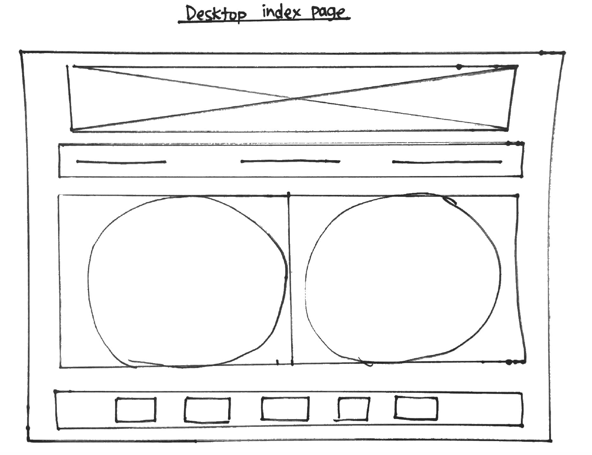
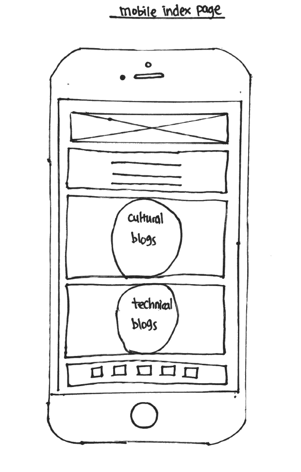
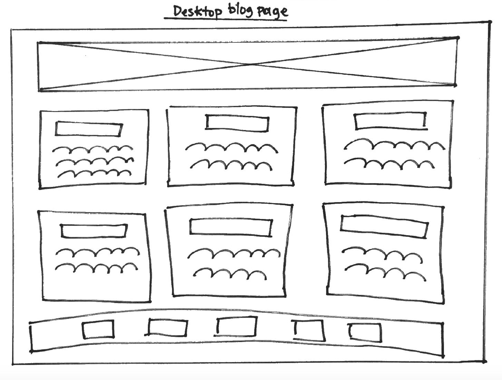
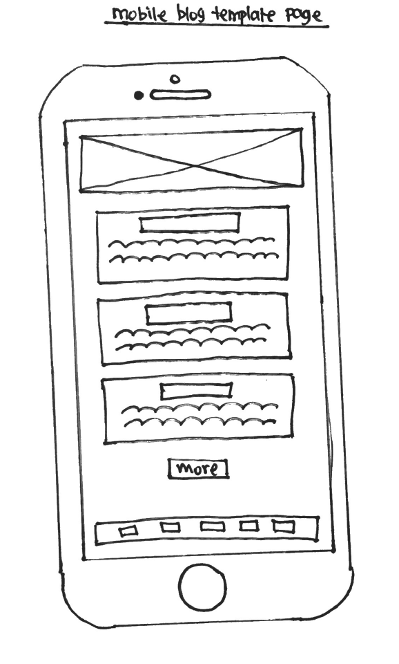

A responsive site is an approach to web design that allows the site to be viewed from all different devices no matter the size. This is particularly important as we live in an age where people want and can get information on the go, and designing a user-friendly responsive site can make the difference on how your information is relayed to customers.
What mobile first design is, and why it's importantMobile first design, is when you are designing for a smaller screen first, as in a moving house analogy, if you are moving from a big house to a small house there isn't always enough room in the small house to put big furniture, this leads to somethings having to be thrown out or a cluttered space. In mobile first design we code to allow for the bare essentials and then add code when the screen/ device is bigger, this is because bigger devices has better processing and it will cut down the time it takes for our webpage to load.
What frameworks are, and their pros and consFrameworks are pre-made style sheets you can use a base to layout your site. On this site I have used a skeleton framework. They take out some of the work and allow you to make a responsive site easily by doing all the heavy lifting. However this can lead to a lot of sites looking similar, be a hinderence to learning and sometimes does require more fiddling to layout your site.
What a wireframe is and why we use itWireframes are a way to plan and design your site before you start coding it. We use them to be able to layout each element on the page and start thinking about how it is going to come together. Below you can see my wireframes for this site.
   Click on image for larger size.
The aspects of your wireframes you found difficult to implementAspects of implementing my wireframes that I found difficult was that I was unable to do some of the features I wanted. I also had a lot of trouble getting my css correct and running the way I wanted. This meant a lot of time was spent on research and playing around with features as well as comprimising on the product, cue back process over product mindset.